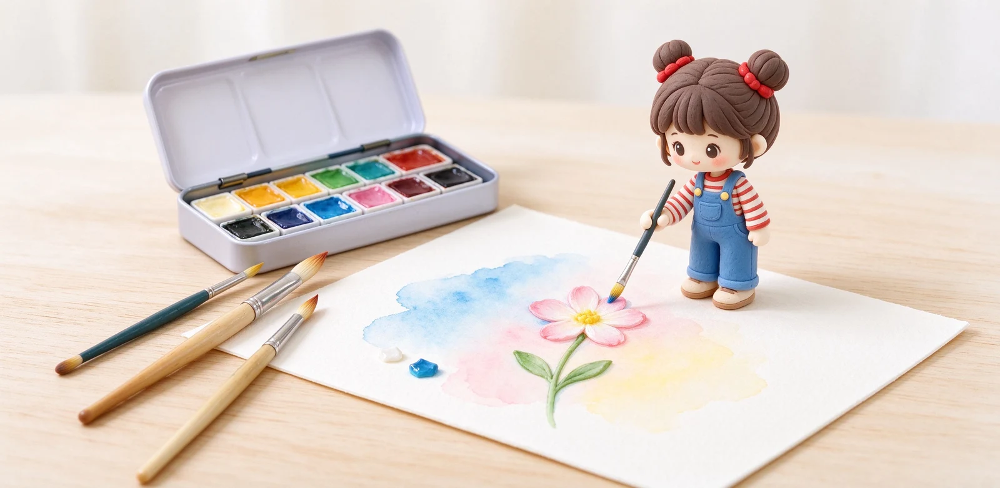

語意摘要：水彩迷人又傷錢的地方在於「紙差就毀」。新手最小配備是：一盒 12 到 16 色固形水彩（如溫莎牛頓 Cotman 口袋盒、俄羅斯白夜）、兩三支不同大小的水彩筆、以及 300g 中目（冷壓）水彩紙。固形水彩乾淨好攜帶，適合桌面與出門寫生；水彩紙一定要 300g 以上才不會一沾水就皺成波浪。
為什麼建議新手從固形水彩開始
水彩顏料分管狀與固形（乾塊）兩種。管狀擠出來是濕膏，適合一次調大量色；固形是把顏料烘乾成小方塊，沾水就取色。對新手來說，固形優勢很實際：乾的不會漏、好帶、不會因為擠太多而浪費，盒蓋翻過來就是調色盤。
以溫莎牛頓 Cotman 為例，它的 Sketchers' Pocket 12 色半塊口袋盒是銷售經典，鐵盒打開自帶一支旅繪筆，台幣約千元上下就能入手；俄羅斯的白夜（White Nights）則以顏色濃郁、擴散漂亮、CP 值高著稱，便宜又耐用，被戲稱「傳家寶」。
水彩紙是成敗關鍵：克重與紋理
很多新手畫得開心，結果紙一沾水就翹成波浪、乾了以後坑坑巴巴，問題出在紙太薄。水彩紙看兩個數字：克重與紋理。
| 項目 | 新手建議 | 為什麼 |
|---|---|---|
| 克重 | 300g（140lb）以上 | 吸水飽和也不易皺，免裱紙 |
| 紋理 | 中目／冷壓 | 兼顧細節與暈染，最好上手 |
| 粗目 | 喜歡明顯顆粒感再用 | 適合風景、堆疊肌理 |
| 細目／熱壓 | 畫精密插畫再考慮 | 太滑，新手不易控制水 |
溫莎牛頓自己的水彩紙就是 300gsm／140lb 規格，分 Rough（粗目）、Cold Press（中目／冷壓）與 Hot Press（細目／熱壓）三種。新手直接買 300g 中目的水彩本或水彩卡，不要省錢買薄畫紙。

最小採購清單：照著買不燒錢
- 固形水彩 12 到 16 色一盒（Cotman 口袋盒或白夜）。
- 水彩筆兩到三支：一支大筆鋪大面積（約 6 號）、一支中筆畫主體（約 3 號）、一支小筆勾細節。
- 300g 中目水彩本或水彩卡一本（先買小尺寸試手）。
- 一塊小海綿或抹布吸水、一個可裝水的小杯子。
筆的材質新手不必執著天然貂毛，合成纖維筆好顧、便宜、吸水夠用，等你確定常畫再升級。折疊式蓄水水彩筆（筆桿可裝水）很適合出門，但桌面練習一般水彩筆反而更好控制水量。
新手最容易問的問題
第一張畫就練這兩個：濕畫與漸層
水彩最迷人的是水在紙上自由流動，新手第一週別急著畫具體的東西，先玩兩個基本功。第一是濕畫：把紙先用清水刷濕，再點顏色，看顏色自己暈開，這是天空、背景的基礎。第二是漸層：筆上的顏料由多到少，畫出由深到淺的一道，這是所有立體感的起點。
常見問題 FAQ
水彩新手要先買固形還是管狀？
水彩紙為什麼一定要 300g？
粗目、中目、細目怎麼選？
Cotman 跟白夜差在哪？
水彩筆要買很貴的貂毛筆嗎？
資料來源與核實依據
- Cotman Sketchers' Pocket Set 12 色固形水彩（附旅繪筆）（Winsor & Newton）
- Winsor & Newton 水彩紙 300gsm／140lb、Cold Press 規格（Winsor & Newton EU）
- Winsor & Newton Professional Watercolour Paper 300gsm（Rough 粗目肌理說明）（Winsor & Newton UK）